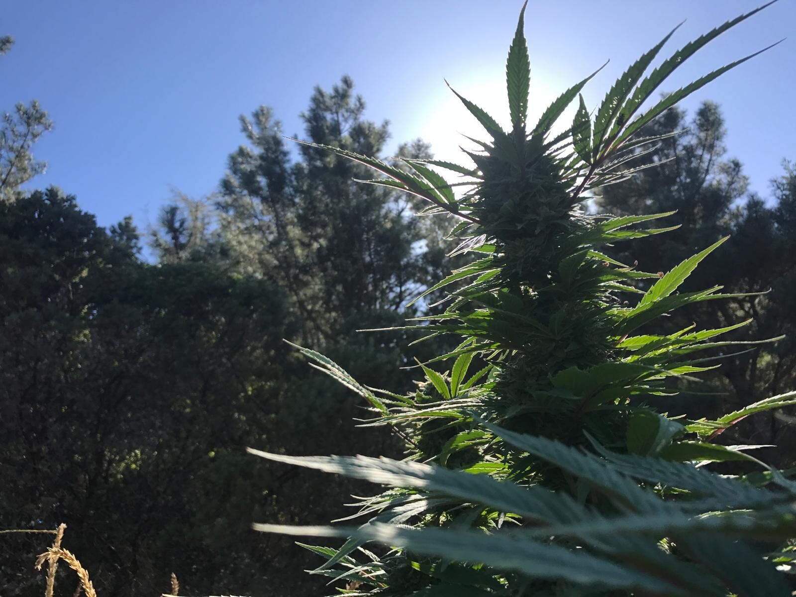
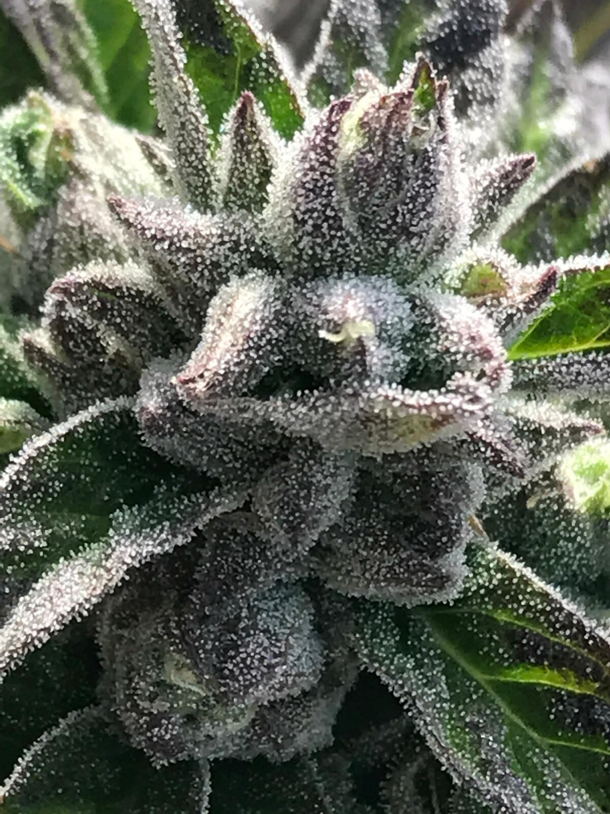
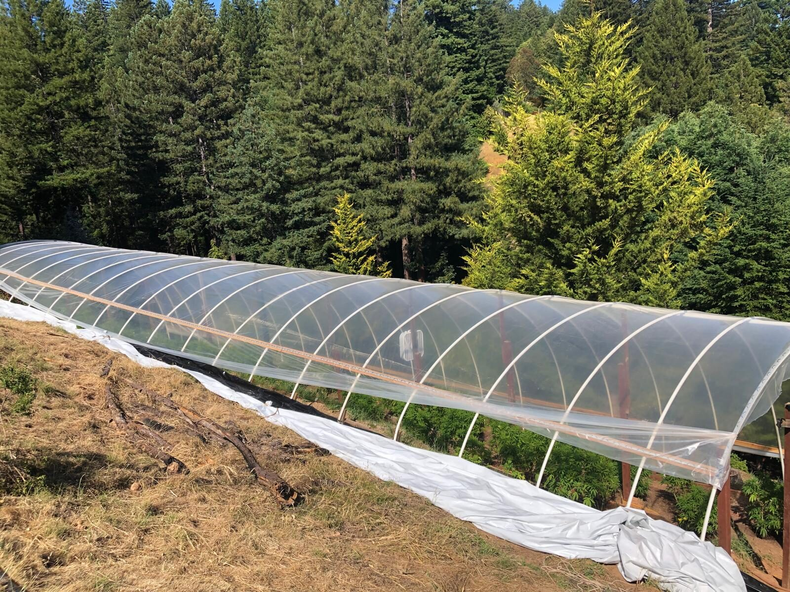
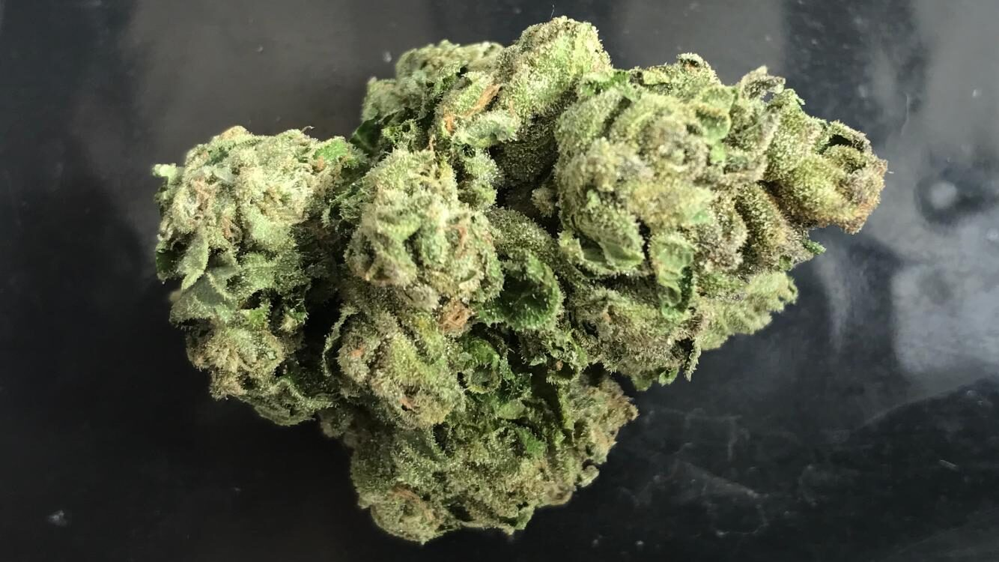
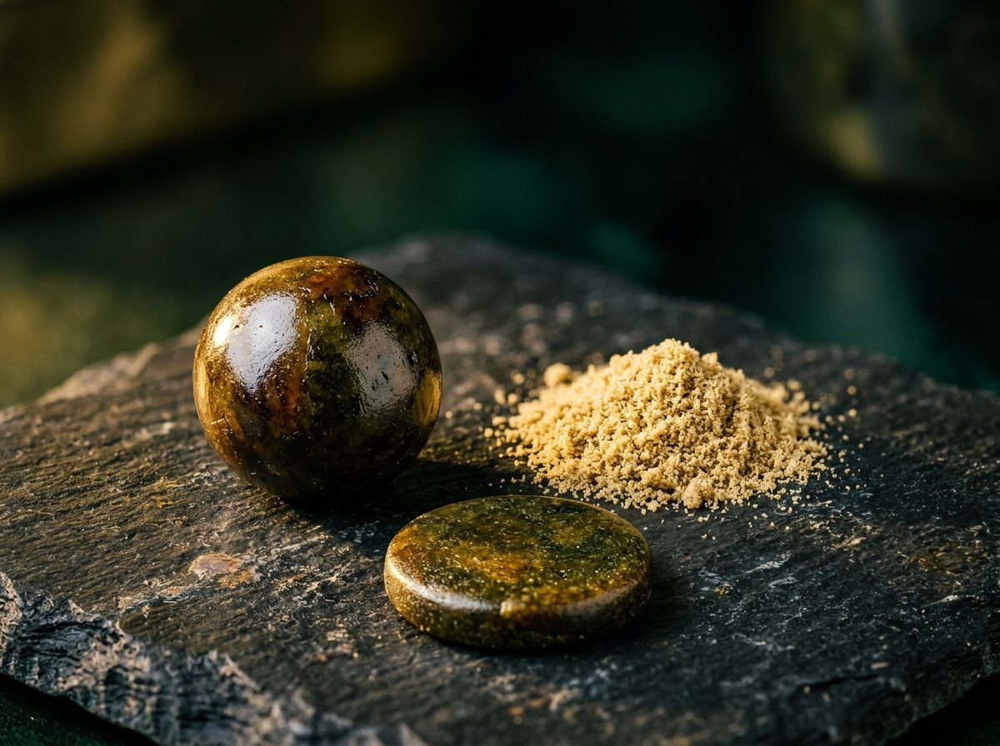
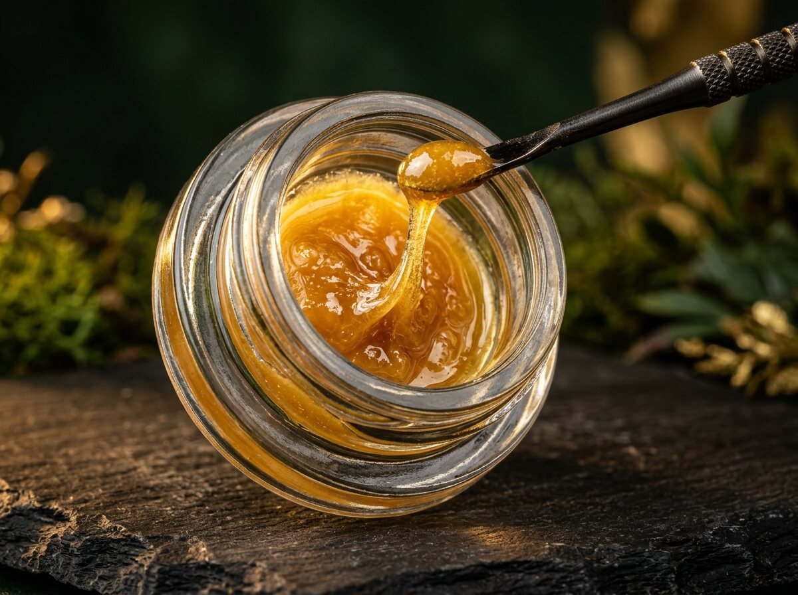
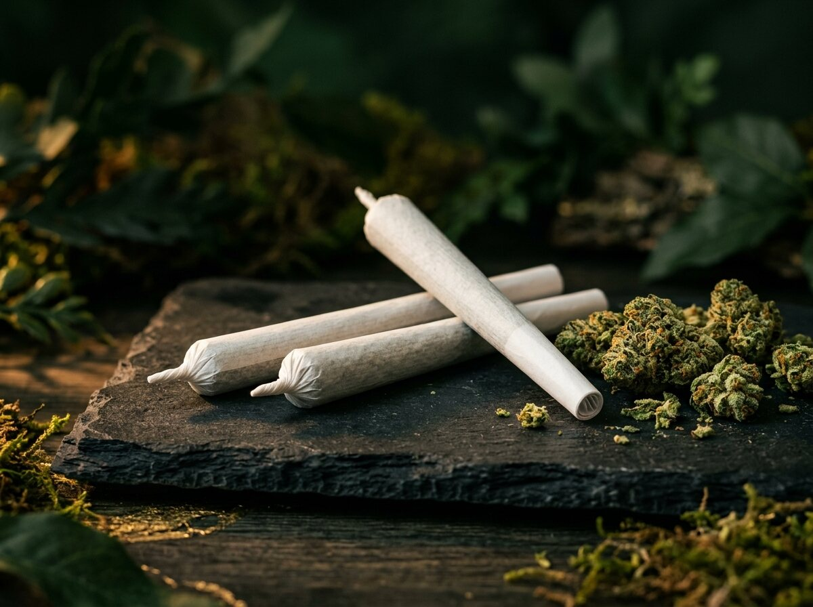

Craft cannabis is grown and finished in small batches, with a person paying attention at every stage. This page explains what the term means, what to look for, and how Prime Origins approaches it in California.
Craft cannabis is cannabis grown and finished in small batches with close attention at every stage, rather than at industrial scale. The term has no legal definition, so it is worth knowing what should sit behind it.
In practice, craft points to a short list of choices: cultivars chosen for aroma and character, plants harvested at peak ripeness, a slow dry and cure, trimming by hand, and a clear record of where each batch came from.
Craft is about how a crop is grown and finished. It is not a claim about strength, and it does not depend on growing indoors.

The word is easy to print on a label. These are harder to fake.
The producer can say where the batch was grown: the region, the site and, at best, the row.
Plants are cut when the flower is ready, not when the schedule says so.
Flower is hang-dried slowly and cured for weeks, so aroma develops instead of being rushed out.
People trim and grade the flower, and only the best tops are sold as jarred flower.
The batch has its own documents, including the lab result, and the seller will show them.
Calnejo Estates at Vista Ranch, in the Anderson Valley of Mendocino County, is the focus of our California acquisition programme. The site sits on a south-facing hillside ringed by redwoods, inside the Navarro River Cannabis region.
The practices shown for the site are sun-grown, full-term and regenerative. It is described as using smart pots and engineered living soil, with watershed restoration alongside cultivation.
Flower is harvested at peak ripeness, hang-dried slowly, hand-trimmed, then cured for weeks in small batches. Only the top flower is jarred. The rest feeds the hash, rosin and pre-roll lines.
Acquisition and integration remain subject to the relevant completion milestones.

Every batch graded and documented.




For a low-THC option, Fixer is a high-CBD craft cultivar offered as hand-graded flower and as seed, with batch-specific lab results.
A craft claim is only as good as the record behind it. Our aim is a clear record from origin through to the customer: where a batch was grown, how it was processed, and the documents that support it.
Batch records, supporting documents and trading workflows are connected through Prime Origins, the group's operating platform for cultivation and processing workflows, inventory, wholesale orders and product records.
Craft cannabis is cannabis grown and finished in small batches with close attention at every stage, rather than at industrial scale. The term has no legal definition. In practice it usually points to careful cultivar selection, harvest at peak ripeness, a slow dry and cure, hand trimming and a traceable origin.
No. Craft describes how a crop is grown and finished, not the building it is grown in. The California site at the centre of our programme is sun-grown and full-term, in living soil.
Ask for the batch record. A craft producer should be able to say where the batch was grown, when it was harvested, how it was dried, cured and trimmed, and show the lab result for that batch.
Jarred flower from the Navarro River region of Mendocino County, whole-flower pre-rolls, ice-water solventless Craft Hash and Live Rosin. Fixer is a high-CBD, low-THC craft cultivar offered as flower and seed.
Cannabis products are sold only through licensed channels where legally permitted. Licensed buyers, dispensaries and distributors can contact the group through the partner form.
We welcome conversations with licensed buyers, dispensaries and distributors.
Partner with us